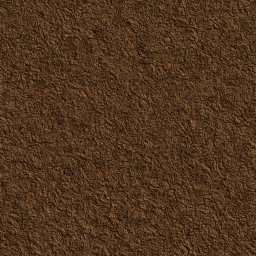
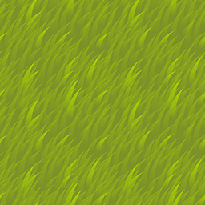
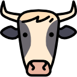
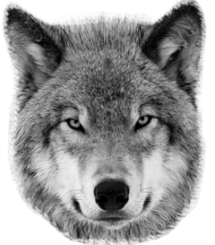
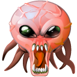
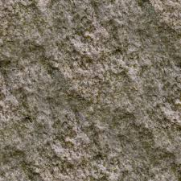

| 0 |
 |
"Հող" |
|
| 1 |
 |
"խոտ", որը բազմանում է 2 ցիկլը մեկ ամռանը և գարնանը, իսկ ձմռանը և աշնանը 5 ցիկլը մեկ ,մահանում է երբ նրան ուտում է խոտակերը կամ այլմուլորակայինը։ |
|
| 2 |
 |
"Կով",որը բազմանում է ամռնաը և գարնանը 7 հատ խոտ ուտելուց հետո ,իսկ ձմռանը և աշնանը 13 հատ խոտ ուտելուց հետո , մահանում է որոշ ժամանակ չուտելուց հետո, կամ
երբ նրան ուտում է գիշատիչը կամա այլմուլորակայինը , Քայլում է Մոտակա 8 վանդակներում : |
|
| 3 |
 |
Գիշատիչն է,Քայլում է Մոտակա 8 վանդակներում,շարժվելիս էներգիան քչանում է 1֊ով, Ուտում Խոտակերին մոտակա 8 վանդակներում, որից հետո էներգիան ավելանում է 2-ով,եթե ամառ կամ գարուն է ,իսկ եթե փմեռ կամ աշուն՝ 1-ով ,Բազմանում է մոտակա դատարկ տարածքներում, երբ էներգիան 10֊ից ավել է, նրակ կարող է միայն ուտել այլմուլորակայինը։ |
|
| 4 |
 |
"Ալյմոլորակային",ծնվում է գարնանը և ամռանը ամեն 5 վարկյանը մեկ ,Քայլում է Մոտակա 16 վանդակներում,շարժվելիս էներգիան չի քչանում , Ուտում ամեն ինչ, մոտակա 16 վանդակներում, Սատկում է որոշ ժամանակ հետո |
|
| 5 |
 |
"Ռումբ",ծնվում է գարնանը և ամռանը ամեն 5 վարկյանը մեկ,Չի քայլում,Պայթում է ծնվելուց 8 վարկյան հետո,առաջացնելով գիշատիչ մոտակա 16 վանդակներից մեկում։ |
|
| 6 |
 |
"Քար", Առաջանում է միայն ձմռանը, խանգարելով մնացածի տեղաշարժմանը։ |
|